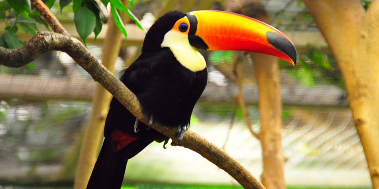

Toco Toucan
AKA: Common toucan or Toucan. Scientific Name: Ramphastos toco Family: Ramphastidae Species: R. toco Speed: 64 km/h Length: 55 – 65 cm Mass: Male: 0.723 kg Female: 0.576 kg Wing Span: 22 – 26 cm Life Span:12 – 20 years Location: central and eastern South America. Diet: Fruits, but also insects, eggs, chicks, frogs, and small reptiles.
Appearance:
It has a mainly black body with a striking plumage, a white throat, chest and upper tail-coverts, and a huge bill.
Facts
- It is a poor flyer.
- It is mostly seen in pairs or small groups.